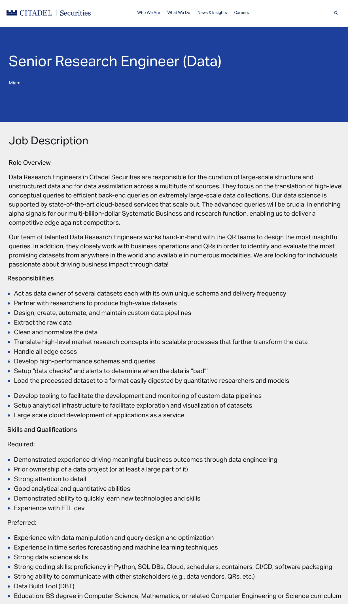
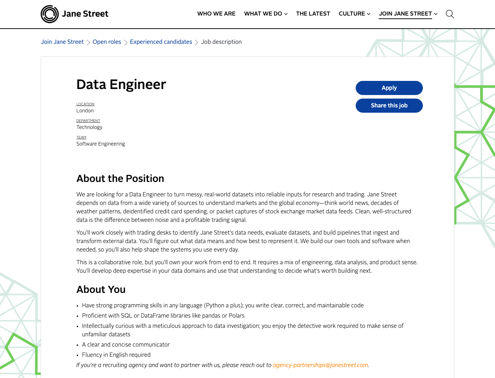
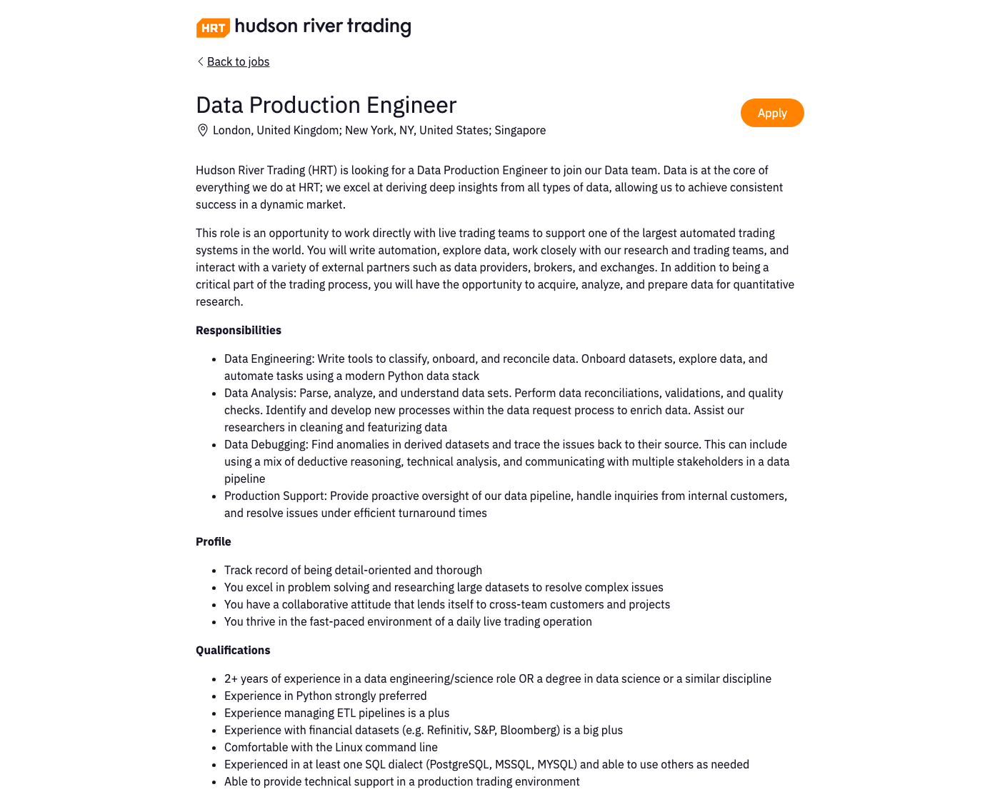

Why “Data Pipelines for Quantitative Research”?#
Open a job posting for the data engineers who work alongside quantitative researchers and you will find duties like these two:
“Partner with researchers to produce high-value datasets”
“Translate high-level market research concepts into scalable processes that further transform the data”
— Citadel Securities, Senior Research Engineer (Data) (full archived posting)
This is the job that this course trains students to do. Different companies assign different titles to this role. Commonly used titles include research engineer, data engineer, and quantitative developer on a data team, but the work is the same: take research that lives in a researcher’s head or in a published paper and turn it into a production data pipeline that runs reliably every day. In short, this course teaches students to productionize research, to borrow industry’s word for it.
The course is named after the thing it teaches you to build and the people it is built for. A data pipeline is the path from raw source data to a finished analytical product: extraction, cleaning, transformation, validation, analysis, documentation, and publication, automated end to end. Quantitative research is who that path serves. The central idea of the course is pipelines built for researchers, the same partnership the Citadel posting above describes, and every case study in the course is one of these pipelines. “Data pipeline” is not academic coinage, either. It is the phrase financial firms themselves use when they hire for this work, and the evidence is below, straight from the firms’ own postings.
Concretely, Data Pipelines for Quantitative Research is a hands-on course centered on building reproducible analytical pipelines: automated and fully reproducible workflows that carry a quantitative analysis from raw data to published result. This course examines every stage of the pipeline, from data extraction and cleaning (extract, transform, load, or ETL), through data validation, exploratory analysis, visualization, modeling, and finally to publication and deployment. In industry, this work is sometimes called productionizing research, pairing developers with researchers to translate ideas into practice. The course teaches the core set of tools used to build such pipelines, tools which are common across computing and data science: build automation and CI/CD, dependency management, SQL, unit testing and automated data-quality checks, the Linux command line, SSH and working with remote machines, Git for version control, peer review through GitHub pull requests, and experiment tracking and model monitoring (basic MLOps).
These skills are taught through a series of case studies, each of which introduces students to a new set of tools and a new key financial data set: pricing and fundamentals from CRSP and Compustat, options data from OptionMetrics, corporate bond transactions from FINRA TRACE, intraday trades and quotes from NYSE TAQ, and order book data from CME Globex.
Prior experience at an intermediate level with Python and the PyData stack is assumed.
What the course aims to teach#
The work described in postings like the one above has two halves, building the pipeline and knowing the data it carries. The course takes its two objectives from them directly:
Build the pipeline. Teach a core set of software tools and the principles behind assembling them into analytical workflows that are reproducible and scalable from end to end. This is Citadel’s “design, create, automate, and maintain custom data pipelines,” taught one tool at a time. In production, an analysis creates value only when it is repeatable and its pipeline runs reliably and predictably, and the same conviction underlies the whole toolkit: reproducibility is fundamental to good science. This toolkit serves as a technical foundation for whatever subfield of quantitative finance or data science a student goes on to pursue.
Know the data. Give students hands-on experience with the financial data sets quantitative researchers use every day. This is DRW’s “understanding of the financial data vendor landscape,” built one case study at a time. Each data set requires domain-specific knowledge to clean and interpret properly, and each poses its own computational challenges to use effectively: FINRA TRACE means working with transaction records at a scale where pandas begins to struggle, and CME Globex’s intraday order book feeds mean confronting exchange-specific quirks head on. Each case study is designed to give students the basic knowledge and tools to use these data sets well.
Why these tools matter#
Given the increasing complexity of the computational sciences, the ability to produce readable, reusable, and reproducible code and analyses matters more every year — for researchers who want to produce good science, and for anyone who wants to add value inside an organization. The skills taught in this course are the ones that bridge the gap between financial computing and data science.
A common characterization of data science describes it as the combination of coding skills, mathematics and statistics, and domain expertise (see the figure below). The coding skills in question are colloquially called “hacking skills” precisely because they are rarely taught in a traditional computer science curriculum. A CS degree covers algorithms, operating systems, and programming languages; the practical skills of the computing ecosystem — the command line, shell scripting, data wrangling, version control — are usually left to the individual to pick up alone. (This gap was the motivation for a supplementary course at MIT, “The Missing Semester of Your CS Education.”) This course provides a structured overview of these tools and demonstrates, by example, how they are used to collect, clean, and analyze financial data, to collaborate within a team of researchers, and to create analyses that outside users can easily reproduce.

Fig. 1 “The Data Science Venn Diagram,” by Drew Conway. The “hacking skills” circle is this course’s home territory.#
This argument is not mine alone. Within academic economics, here is how Matthew Gentzkow and Jesse Shapiro open their practitioner’s guide, Code and Data for the Social Sciences:[1]
Though we all write code for a living, few of the economists, political scientists, psychologists, sociologists, or other empirical researchers we know have any formal training in computer science. Most of them picked up the basics of programming without much effort, and have never given it much thought since. Saying they should spend more time thinking about the way they write code would be like telling a novelist that she should spend more time thinking about how best to use Microsoft Word. Sure, there are people who take whole courses in how to change fonts or do mail merge, but anyone moderately clever just opens the thing up and figures out how it works along the way. This manual began with a growing sense that our own version of this self-taught seat-of-the-pants approach to computing was hitting its limits…
Here is a good rule of thumb: If you are trying to solve a problem, and there are multi-billion dollar firms whose entire business model depends on solving the same problem, and there are whole courses at your university devoted to how to solve that problem, you might want to figure out what the experts do and see if you can’t learn something from it.
Within official statistics, consider this statement by the UK’s Office for Statistics Regulation:[2]
In 2017 we championed the Reproducible Analytical Pipeline (RAP), a new way of producing official statistics… This approach involved using programming languages to automate manual processes, version control software to robustly manage code and code storage platforms to collaborate, facilitate peer review and publish analysis… We consider that RAP principles support all three pillars of the Code of Practice for Statistics: trustworthiness, quality and value. Trustworthiness, by increasing transparency; quality, by reducing the risk of manual errors; and value, by enabling analytical time to be spent adding value for users rather than on menial, repetitive tasks. It is for all of these reasons that we are so passionate about promoting the use of RAP.
And within the finance industry:[3]
We have been in financial data science long enough, when it was called quantitative finance, to see some clear patterns that we believe are detrimental to the career of a financial data scientist: lack of fundamental core knowledge in computer science, lack of SQL knowledge, … lack of visualization abilities to share business insights… Technical knowledge is, in itself, not what’s most important; it’s an understanding of technical functions within a production environment that truly prove a candidate’s worth… Data scientists can be super smart, but if no lines of their code will go into production, it’s a waste of talent.
The jobs this course targets#
The experts above make the case in principle; hiring desks make it in practice. Consider three recent postings from some of the most selective firms in quantitative finance. The highlighted skills — pipelines that ingest and transform data, SQL and DataFrame libraries, Python on Linux, automated data-quality checks — are the skills this course teaches.
{kind=link}

Fig. 2 Citadel Securities — Senior Research Engineer (Data), Miami. “Partner with researchers to produce high-value datasets”; “Design, create, automate, and maintain custom data pipelines”; “Experience with ETL dev”; “proficiency in Python, SQL DBs, Cloud, schedulers, containers, CI/CD, software packaging”; “Data Build Tool (DBT).” (full archived posting)#
{kind=link}

Fig. 3 Jane Street — Data Engineer. “…build pipelines that ingest and transform external data”; “Proficient with SQL or DataFrame libraries like pandas or Polars.” (full archived posting)#
{kind=link}

Fig. 4 Hudson River Trading — Data Production Engineer. “…automate tasks using a modern Python data stack”; “Perform data reconciliations, validations, and quality checks”; “Experience managing ETL pipelines is a plus”; “Experienced in at least one SQL dialect.” (full archived posting)#
These three are not outliers. The same language appears at Jump Trading (whose Chicago campus internship asks for “data pipelining and database management”), IMC, DRW, Point72’s Cubist Systematic Strategies, Akuna Capital, AQR, and JPMorganChase — all archived here, and all quoted throughout the week-by-week breakdown below.
A name that translates into job skills#
A course title does work beyond the classroom. It shows up on a student’s transcript and résumé, and a recruiter reading it should be able to tell, without any explanation, what the student learned. “Data pipeline” passes that test. It is the industry’s own word for the skill this course teaches, and one of the most common phrases in postings for data roles at trading firms, hedge funds, asset managers, and banks. “For quantitative research” names who the pipeline is built for. Quantitative research is the industry’s name for the function these engineers serve, the “QRs” of Citadel’s posting, and the central idea of the course is pipelines built for those researchers.
Within the program’s Core Programming sequence, the name also marks a clear division of labor with Python for Financial Data Science. That course is the place to build fluency in the Python language itself along with the core data-science toolkit. This course assumes you already have intermediate Python and concentrates on the layer around the analysis: the data sources, the automation, the testing, the packaging, and the deployment that turn analysis code into a maintained, reproducible product. In short: that course teaches you Python for data science; this one teaches you the pipeline around the data.
The pipeline is the spine of the course#
The pipeline is not a theme grafted onto the course; it is its organizing spine. One of the first readings of the quarter is on reproducible analytical pipelines. Week 3 is titled “Automating the Pipeline with PyDoit”. Every case study in the course is structured the same way: pull raw data from a real source (WRDS, FRED, Databento), clean and transform it in tested, documented Python, and publish an output that regenerates from scratch with a single command. That is a data pipeline.
For a fuller statement of what the course teaches and why, see What is this course about? and the syllabus.
The material, week by week — in the words of the job postings#
This course is designed to target the skills mentioned above, which are important to all data science and research related jobs. They are also skills that are frequently mentioned in job descriptions for roles as Data Engineers. To demonstrate this, in August 2026 I collected postings for data roles at ten financial firms: Jane Street, Citadel Securities, IMC Trading, DRW, Point72’s Cubist Systematic Strategies, Jump Trading, Hudson River Trading, Akuna Capital, AQR, and JPMorganChase. Below is the outline of the course, week by week. Each week begins with a short description of the tools and why they matter, followed by what the postings say — quoted verbatim, cited footnote-style. A single sentence in a posting often spans several of the course’s topics, so some quotes appear under more than one week. Every footnote links to a full archived copy of the posting.
Week 1: Git, GitHub, and virtual environments#
Git is the version control system used essentially everywhere in industry: it records every change ever made to a codebase, lets a team work on the same code without overwriting each other, and makes any past version recoverable. GitHub is the platform where those repositories live and where teammates review each other’s changes. A virtual environment (we use conda) pins the exact package versions a project depends on, so an analysis runs identically on every machine. This is the vocabulary behind the postings’ phrases below: “GitOps” means driving deployments entirely through Git, and “peer code reviews” happen through the GitHub workflow you will use every week of this course.
“Demonstrated experience working on an Agile team employing software engineering best practices, such as GitOps and CI/CD, to deliver complex software projects”[4]
Week 2: Financial data sources and SQL — WRDS and CRSP#
SQL is the standard language for pulling data out of databases, and pandas and Polars are the Python “DataFrame libraries” for reshaping that data once you have it — when a posting names any of these, it is describing the first mile of a pipeline. We practice on the real thing: WRDS (Wharton Research Data Services), the gateway to the databases used across the industry, starting with CRSP, the standard historical database of US stock prices. Notice that the postings also treat knowledge of the data vendors themselves — who sells which dataset and what its quirks are — as a skill in its own right; the course’s case studies (CRSP, Compustat, FINRA TRACE, OptionMetrics, Databento) are chosen to build exactly that.
“Proficient with SQL or DataFrame libraries like pandas or Polars”[5]
“Experienced in at least one SQL dialect (PostgreSQL, MSSQL, MYSQL) and able to use others as needed”[6]
“An understanding of the financial data vendor landscape and product offerings”[7]
“Experience with financial datasets (e.g. Refinitiv, S&P, Bloomberg) is a big plus”[6]
Week 3: ETL and pipeline automation with PyDoit#
ETL — extract, transform, load — is the industry’s name for the core pattern of data work: pull raw data from its source, clean and reshape it, and store the result where analysis can use it. A build-automation tool (we use PyDoit) chains those steps into a dependency graph of tasks, so the entire pipeline reruns in the correct order with a single command and skips any step whose inputs haven’t changed. Our case study rebuilds the Fama–French (1993) portfolios from raw CRSP and Compustat data this way. When Citadel asks for “ETL dev” and DRW asks for “ingestion pipelines,” this pattern — not any single tool — is what they mean.
“Design, create, automate, and maintain custom data pipelines”[8]
“build pipelines that ingest and transform external data”[5]
“Improve data ETL pipeline and build tools to analyze new data efficiently.”[9]
“3+ years of demonstrated experience designing and implementing ingestion pipelines”[7]
“Experience with ETL dev”[8]
Week 4: Reproducible reports — ChartBook, GitHub Pages, LaTeX, and pull requests#
A pipeline’s output has to land somewhere people can actually see it. GitHub Pages publishes a website directly from a repository, and ChartBook organizes a project’s charts and tables into a browsable, always-current catalog. This is what the postings call “dashboards” and “analytical infrastructure.” For written results, we use LaTeX, the typesetting system behind professional-quality quantitative reports and nearly every academic paper in finance. The habit this week builds is treating a report not as a one-off document but as a product the pipeline regenerates automatically every time the data updates. This week also introduces the pull request, which is how real teams change code: you propose an edit, a teammate reads it line by line and comments, and only after review does it merge. That is the “peer code review” in AQR’s posting. The postings below make a further point worth taking seriously: firms ask for communication skills in the same breath as technical ones, because a pipeline’s results only matter if the researcher, trader, or client on the other end understands them.
“Setup analytical infrastructure to facilitate exploration and visualization of datasets”[8]
“design and run scalable platforms and pipelines, define knowledge architecture, build intuitive dashboards, and help ensure strong governance, privacy, and data quality standards”[10]
“Clear written and verbal communication skills to translate complex technical work for business stakeholders and collaborate in agile, cross functional teams.”[10]
“Strong ability to communicate with other stakeholders (e.g., data vendors, QRs, etc.)”[8]
“Strong command of engineering best practices, including code quality, design documentation, peer code reviews, automated testing, and test coverage”[11]
Week 5: Unit tests and data validation with pytest#
A unit test is a small program that checks your code automatically: for a data pipeline, tests answer questions like did every date parse? are there duplicate tickers? do the portfolio weights sum to one? This is precisely what the postings call “data checks,” “data validation,” and “data quality control” — the difference between noticing bad data yourself and having a customer notice it for you. We write these tests with pytest and wire them into the pipeline, so every rebuild checks its own data before it publishes anything.
“Setup ‘data checks’ and alerts to determine when the data is ‘bad’”[8]
“Proven expertise in developing data quality control processes to detect gaps or inaccuracies”[7]
“Build automated data validation test suites that ensure that data is processed and published in accordance with well-defined Service Level Agreements (SLA’s) pertaining to data quality, data availability and data correctness”[4]
“Perform data reconciliations, validations, and quality checks”[6]
“Strong command of engineering best practices, including code quality, design documentation, peer code reviews, automated testing, and test coverage”[11]
Week 6: CI/CD with GitHub Actions#
CI/CD stands for continuous integration and continuous deployment: every time code is pushed, an automated service checks out the change, runs the full test suite, and — if everything passes — rebuilds and republishes the output, with no human in the loop. GitHub Actions is GitHub’s built-in CI/CD service, and it is what we use to run each case study’s tests and publish its results automatically. When the postings below say “CI/CD” — and notice how many of them do — this machinery is exactly what they mean.
“Demonstrated experience working on an Agile team employing software engineering best practices, such as GitOps and CI/CD, to deliver complex software projects”[4]
“Ability to work with a team in a fast-paced environment, deploying new software daily”[12]
“Build, deploy, and monitor our data processing pipelines (Java, Python, Spark, Flink)”[13]
Week 7: Basic MLOps — monitoring models in production#
MLOps is the discipline of keeping a model healthy after it ships. A model in production is a pipeline that never stops running: new data arrives on a schedule, the model recomputes its outputs, and someone has to notice when the data goes bad or the model’s behavior drifts. This week applies the course’s toolkit to that problem. We add experiment tracking with MLflow, so every run’s inputs, parameters, and outputs are recorded and comparable. We extend the course’s data validation habits with drift checks, so the pipeline refuses quietly corrupted inputs instead of publishing them. And we close the loop with the scheduling and CI/CD machinery from earlier weeks, so the model retrains and republishes with no human in the loop. Our case study is the course’s FedWatch monitor, a live model of Fed rate-move probabilities that this week learns to watch itself.
Week 8: Medium-sized data and remote machines#
When data outgrows a laptop, the toolkit changes: Polars is a modern DataFrame library built for speed, Parquet is a compressed columnar file format designed for analytics, and the computation moves to remote Linux servers that you reach over SSH and operate entirely from the command line — which is why so many postings insist on Linux and “Unix scripting.” We practice on FINRA TRACE, the regulatory feed of corporate bond transactions, running the pipeline on UChicago’s Midway HPC cluster at a scale where these tools genuinely matter, and we schedule recurring jobs with cron, the classic Unix scheduler behind the “schedulers” in Citadel’s list.
“Comfortable with the Linux command line”[6]
“Unix scripting experience (bash, python, etc.)”[13]
“Familiarity with the Linux environment.”[9]
“Strong understanding of financial point-in-time and time-series data and analysis”[7]
“Strong coding skills: proficiency in Python, SQL DBs, Cloud, schedulers, containers, CI/CD, software packaging”[8]
Week 9: Python packaging and documentation with Sphinx#
A Python package is code organized for reuse and installation — the difference between a folder of scripts only you can run and a library a teammate can pip install and build on. Packaging forces the habits employers list under “software packaging”: a clean project layout, explicitly declared dependencies, and versioned releases. Documentation completes the package. Sphinx, the same tool that builds the documentation for pandas and the course’s own textbook, generates browsable reference pages from the code itself, so the docs live next to the code and never fall behind it. This is also the week that turns your coursework into something you can hand a hiring manager: an installable, documented library, with your final project as the natural first candidate.
“Strong coding skills: proficiency in Python, SQL DBs, Cloud, schedulers, containers, CI/CD, software packaging”[8]
“gain experience with our full-cycle process for development, testing, and release”[12]
“Produce clean, well-tested, and documented code with a clear design to support mission critical applications”[4]
What the course does not claim#
The course does not cover everything in these postings. Kafka, Spark, Kubernetes, and warehouse platforms like Snowflake and Databricks appear in several and are beyond our scope, though the course’s progression (pandas, then Polars and Parquet, then remote machines) is deliberately pointed in that direction. The postings also reflect how fast expectations move — Jump Trading’s internship posting lists “Comfortability with Claude Code”[12] among its required skills. What the course does claim is the layer beneath all of it: the habits of building pipelines that are versioned, tested, documented, automated, and reproducible. Those habits are what every posting above is asking for.
The archived postings#
Each posting quoted in this chapter is preserved in full — text, screenshot, PDF snapshot, and Wayback Machine link — because postings disappear once roles are filled. See Archived Job Postings.